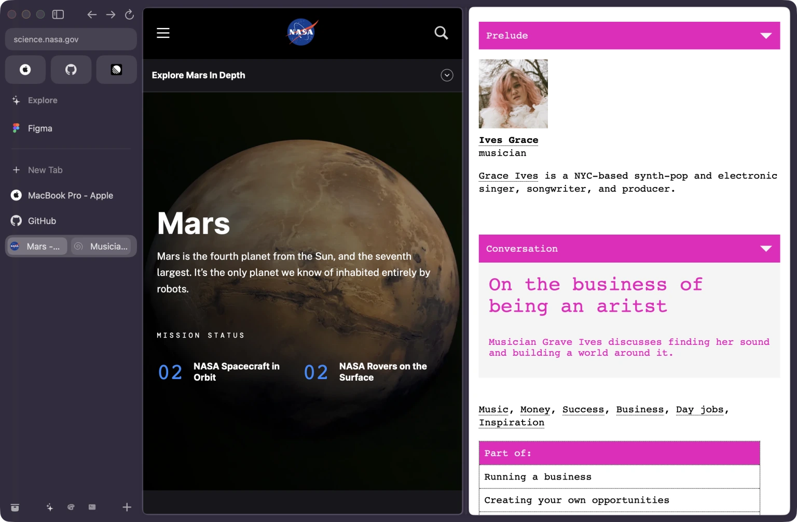
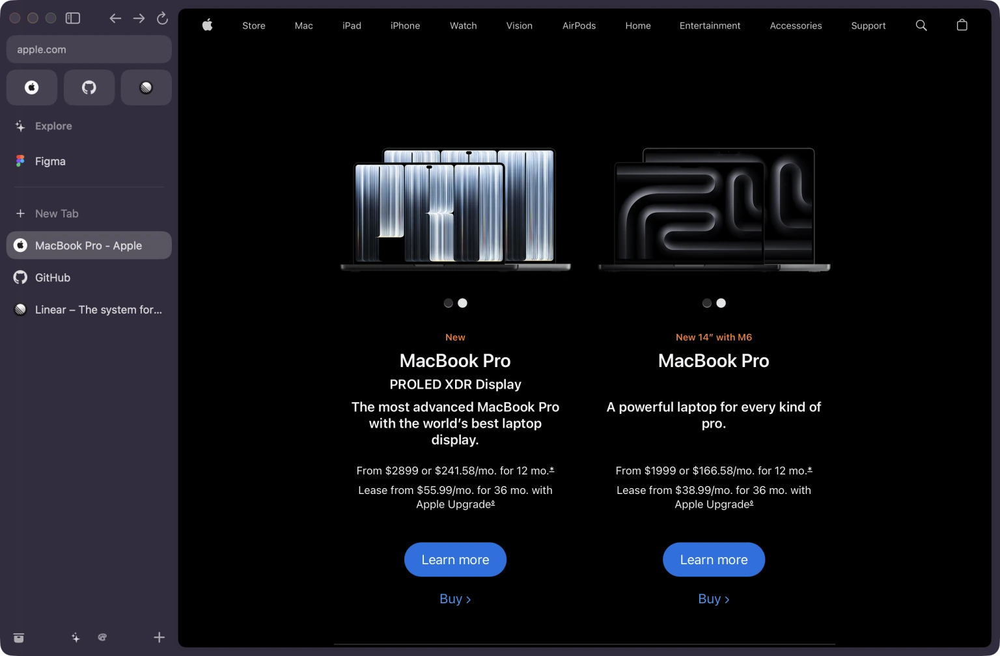

Split View
Put a second page beside the current one. Up to four panes share one row in the sidebar.

In active development. Free and open source, for macOS 26 or later.



Put a second page beside the current one. Up to four panes share one row in the sidebar.

A small single-page window for a quick look. Links from other apps can open there, and its menu moves the page into your main window.

On for each profile, with private windows and camera and microphone decisions per site.
Clear the page around the words, adjust the type, or save supported articles to read offline.
Save and fill through the macOS keychain. Separate profiles keep separate credentials.
Your GitHub pull requests in the sidebar, refreshed as work opens, changes and closes.
Install supported Chrome Web Store extensions, unpacked WebExtensions or signed Safari extensions.
Bring bookmarks and history from Arc, Safari, Firefox and Chrome, and passwords from a CSV.
with you in control
Your library, history and tabs are stored on your Mac. AI features and iCloud sync stay off until you turn them on, and passwords have their own iCloud Keychain switch. The privacy policy lists every request Vane makes, and the source is public.
Read the privacy policyFree and open source, for macOS 26 or later. Bring your bookmarks and history with you.
Download VaneVane is in active development. Release notes